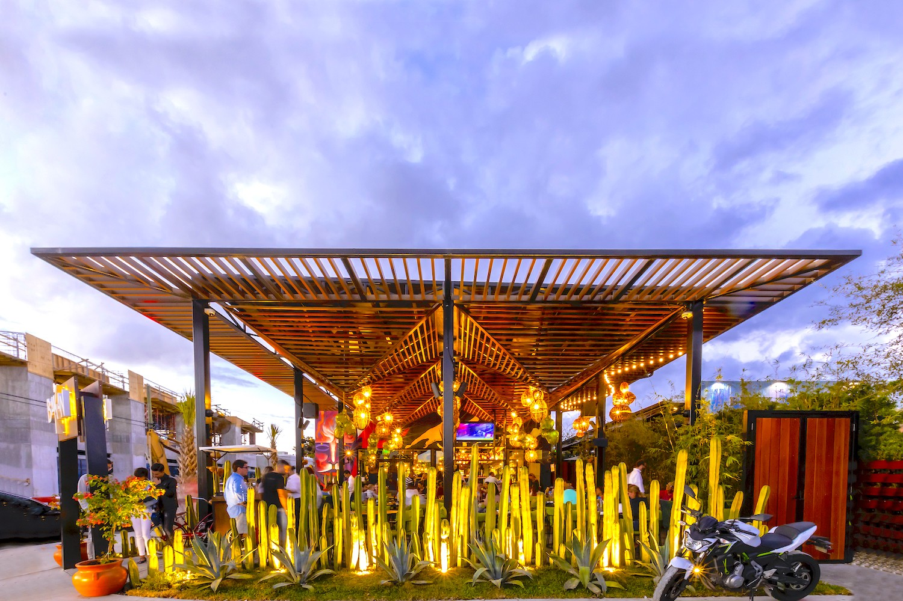

"As a new vegan, I'm enjoying exploring flavors from plants & plant-based proteins!" - Lizzo
Crave Vegan Cafe is 100% Plant Based! Positives of Plant Based Eating
“Restaurant Image: Bakan’s Tulum-inspired Outdoor Patio, In The Heart of Wynwood by Kathleen Lam for Bakan at https://media2.miaminewtimes.com/mia/imager/u/blog/11680510/exterior_cactus_3.jpg?cb=1643223803 CB 1643223803”
"It took a doctor in Macon, Georgia, to say, 'If you don't change what you're doing, you're going to get [sick].'... So I switched everything up out of necessity. I want to live. Thank God, because I feel so much better." - Taraji P. Henson